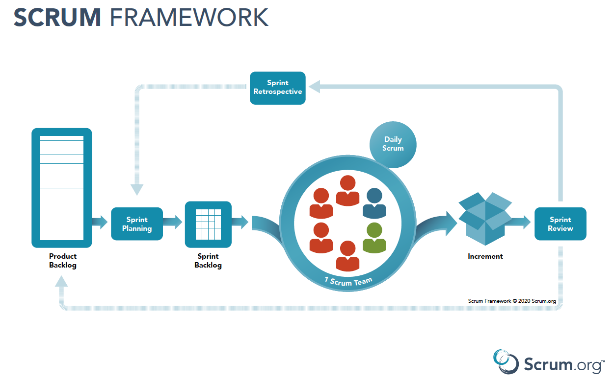

HB - DWWM - Scrum
Damien DUBOST
09/06/2023
Introduction
Découverte de Scrum
Sommaire
- Qu'est-ce que Scrum ?
- Scrum Team
- Scrum Events
- Scrum Artifacts
- Conclusion
Qu'est-ce que Scrum ?
Scrum signifie "mélé"
C'est une méthode agile d'organiser un projet avec des principes et règles strictes
Les fondations

Le fonctionnement
Les parties
- La Scrum Team
- Les Scrum Events
- Les Scrum Artifacts
The Scrum Events

The Scrum Artifacts
Les artefacts de Scrum représentent un travail ou une valeur. Ils sont conçus pour maximiser la transparence des informations clés. Ainsi, tous ceux qui les inspectent ont la même base d'adaptation.
Les engagements
- L'Objectif Produit pour le Product Backlog
- Objectif Sprint pour le Sprint Backlog
- Fin d'un tache pour l'Incrément
Product Backlog
Le Product Backlog est une liste ordonnée et émergente de ce qui est nécessaire pour améliorer le produit. C'est l’unique source du travail entrepris par la Scrum Team.
Engagement : Objectif de Produit
L'Objectif de Produit décrit un état futur du produit qui peut servir de cible à la Scrum Team pour planifier. L'Objectif de Produit est dans le Product Backlog. Le reste du Product Backlog émerge pour définir « ce qui » permettra d'atteindre l'Objectif de Produit.
Sprint Backlog
Le Sprint Backlog est composé de l'Objectif de Sprint (le « pourquoi »), de l'ensemble des éléments du Product Backlog choisis pour le Sprint (le « quoi »), ainsi que d'un plan d'action pour la réalisation de l'Increment (le « comment »).
Engagement : Objectif de Sprint
L'Objectif de Sprint est l’unique but du Sprint. Bien que l'Objectif de Sprint soit un engagement fait par les Developers, il offre une certaine flexibilité en termes de travail nécessaire pour atteindre cet objectif. L'Objectif de Sprint crée également de la cohérence et du focus, tout en encourageant la Scrum Team à travailler ensemble plutôt que sur des initiatives séparées.
Increment
Un Increment est une première étape concrète vers l'Objectif de Produit. Chaque Increment s'ajoute à tous les Increments précédents et fait l'objet d'une vérification approfondie, ce qui garantit que tous les Increments fonctionnent ensemble. Afin de fournir une valeur, l'Increment doit être utilisable.